到目前为止，在本书中，我们已经研究了各种神经网络，正如我们所看到的，它们中的每一个对于各种任务都有自己的优点和缺点。我们还了解到，深度学习架构需要大量的训练数据，因为它们的大小和大量的可训练参数。你可以想象，对于许多我们想要建立模型的问题，可能无法收集足够的数据，即使我们能够这样做，这也将是非常困难和耗时的——甚至可能是昂贵的——来执行。解决这个问题的一个方法是使用生成模型来创建合成数据(我们在第8章、正则化中遇到过这种情况)，这些数据是从我们为任务收集的小数据集生成的。
在这一章中，我们将讨论最近越来越受欢迎的两个主题，并且很可能会继续在这个领域得到更广泛的应用(这是理所当然的)。它们被称为迁移学习和元学习。它们之间的区别在于，迁移学习是我们试图使用一个模型所学的知识来尝试解决另一个不同但相似的问题，而元学习是我们试图创建可以学习新概念的模型。关于迁移学习的文献很少，而且是一种比较杂乱的实践；我们之所以介绍它，主要是因为理解迁移和元学习之间的区别是很重要的，因为它们是相似的，但有很大的不同，而且经常被混淆。然而，本章的重点是元学习。随着本章的深入，我们将更深入地探究它们的区别。
我们将在本章中讨论以下主题:
我们人类有惊人的学习能力，然后我们把学到的知识应用到不同类型的任务中。新任务与我们已知的任务越密切相关，我们就越容易解决新任务。基本上，当我们学习新的东西时，我们从来没有真正从零开始。
然而，神经网络却没有这种奢侈；他们需要从头开始接受培训，以完成我们希望他们应用的每一项任务。正如我们在前面的章节中所看到的，神经网络非常善于学习如何很好地做一件事情，因为它们只学习它们已经被训练识别的分布的插值内的内容，所以它们无法概括它们的知识来处理超出它们在训练数据集中遇到的任务。
此外，深度神经网络可能需要数千万个数据样本，以便在能够很好地执行之前学习数据中的潜在模式。出于这个原因，该领域的研究人员创造了迁移学习——一种将一个神经网络学到的东西转移到另一个神经网络的方法，本质上是引导学习过程。当我们有一个想要构建的项目或想要测试的假设，但我们没有资源(如GPU、足够的数据等)来从头构建和训练网络时，这非常方便。相反，我们可以使用在类似任务中工作的现有模型，并将其用于我们自己的任务。
让我们暂时回想一下第九章、卷积神经网络。我们看到的架构都有一个输入层，它接收特定大小的图像( h × w × c )，然后我们有多个卷积层，后面是一个可选的池(或子采样)层。在网络的末端，我们将特征地图展开成一个完全连接的层，然后输出层就有了我们想要检测的尽可能多的节点和类。我们还了解到卷积神经网络(CNN)可以提取自己的特征，每一层学习不同种类或级别的特征。更靠近输入的层学习非常精细的特征，例如边、曲线、颜色斑点等，而更靠近输出的层学习更大的特征，例如眼睛、耳朵、尾巴、嘴等。
我们可以做的是采用现有的已训练CNN并移除最后几个层(即，完全连接的层和输出层)，并将该CNN视为我们正在为其构建模型的新数据集的特征提取器。或者，我们也可以使用现有的经过训练的CNN来解决新问题，方法是在我们想要为其创建CNN的新数据集上对其进行微调。我们可以通过冻结早期层(因为它们学习非常精细或通用的特征)并使用反向传播微调后面的层来做到这一点，以便CNN学习特定于新数据集的更复杂的特征。
在我们进入迁移学习的细节之前，重要的是我们对它有一个清楚的了解。我们将使用庄等人给出的定义；但是在此之前，让我们回顾一下域和任务的定义。
一个域、、 、，由两部分组成；即一个特征空间， 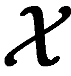 ，一个边际分布， P(X) 。换句话说， 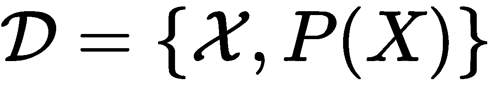 ，其中 X 表示一个数据样本，定义为 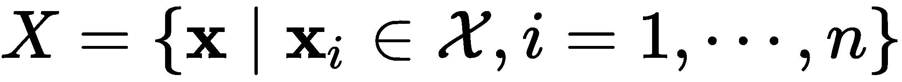 。
、，由两部分组成；即一个特征空间， 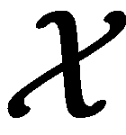 ，一个边际分布， P(X) 。换句话说， 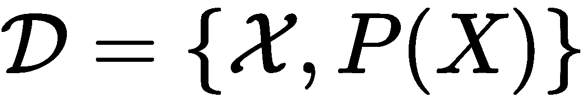 ，其中 X 表示一个数据样本，定义为 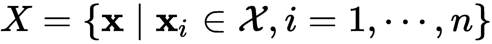 。
一个任务、、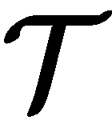、，由一个标签空间、、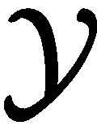、和一个映射函数、 f 组成；也就是 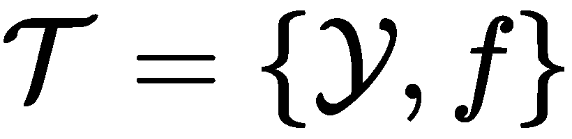 。映射函数(我们的模型)是一个隐式函数，可以从样本数据中学习。
在迁移学习的情况下，我们有两个不同的领域和任务——每个领域和任务对应一个源和一个目标——我们的目标是将模型在源领域学到的知识转移到目标领域的模型，以提高其整体性能。
在我们深入了解细节之前，有四个概念对我们理解很重要。它们如下:
- 目标域 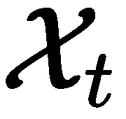 和源域 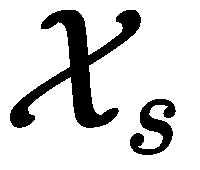 的特征空间不相同。
- 目标域的标签空间， 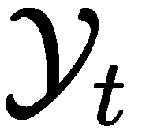 ，和源域， 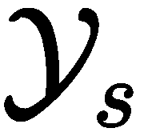 ，不一样。
- 领域适应——这是目标领域的边际概率 P(X t ) 和源领域的边际概率 P(X s ) 不相等的地方。
- 目标域的条件概率P(Yt|Xt)和源域的条件概率P(Ys|Xs)不相等。
正如你所想象的，这里有一些限制。你不能在另一项任务中使用任何预先训练好的任意大小的模型。对要使用的预训练网络类型的考虑很大程度上取决于我们为我们的任务所拥有的数据集是否与预训练模型被训练的数据集相似，以及对于我们手头的当前任务可用的数据集的大小。例如，如果我们有一个对象检测任务，我们不能使用预训练的甘或RNN，因为他们是不同的任务。此外，如果模型已经在图像上被训练来识别各种农场动物，它将不会在希望我们的网络识别飞机和汽车的品牌和型号的新任务中表现良好。
元学习——也被称为学会学习——是深度学习中另一个有趣的话题，被许多人认为是通向人工通用智能 ( AGI )的一条有前途的道路。对于那些不知道AGI是什么的人来说，当人工智能达到理解和学习做人类能够做的任何类型的智能任务的能力时，这就是人工智能的目标。
正如我们所知，深度神经网络非常渴求数据，需要大量的训练时间(取决于模型的大小)，有时可能需要几周时间，而人类能够更快、更有效地学习新概念和技能。例如，作为孩子，我们可以很快学会在只见过一次或几次之后，就绝对肯定地说出驴、马和斑马之间的区别；然而，一个神经网络可能需要几十万到一百万个数据样本，才能学会以专家级的准确度区分这三个类别。
我们试图用元学习来回答的问题是，我们是否可以创建一个可以像我们一样学习的模型——也就是说，只需要少量的训练样本，就可以学习新概念和技能来处理新任务。因此，简而言之，我们希望找到我们所学知识之间的相似之处，并利用这一点来学习更快地完成新任务。一个好的元学习模型是一个在许多任务上被训练过的模型，并且已经被优化以在这些任务上表现良好，以及在它没有被训练过的任务上表现良好。
到目前为止，我们在本书中看到的深度神经网络都需要数百万个数据样本，有时甚至需要数亿个样本。然而，在元学习中，我们希望我们的模型仅使用少量样本进行学习；我们称之为少量学习。
仅使用少量数据样本进行学习的问题被称为少镜头学习或 k镜头学习(其中 k 是数据集每类的数据样本数量)。假设我们有一个图像识别问题，有三个类别——驴、马和斑马。如果每个类有10个样本，那么这被称为10次学习。但是，如果每个类只有1个样本，那么这就是一次性学习。还可能有另一种有趣的情况，我们没有数据样本，这被称为零炮学习。(没错，我们可以在没有任何数据的情况下训练一个神经网络...开个玩笑！我们用元数据代替；我们很快就会了解到这一点。)
如果我们的数据集中有多个类，并且我们想要执行少镜头学习，这被称为 n路k镜头学习，其中 n 是类的数量。在我们的例子中，我们有3个类，每个类有10个样本，所以我们正在进行3向10次学习。
前面的每个任务都有一个关联的数据集， 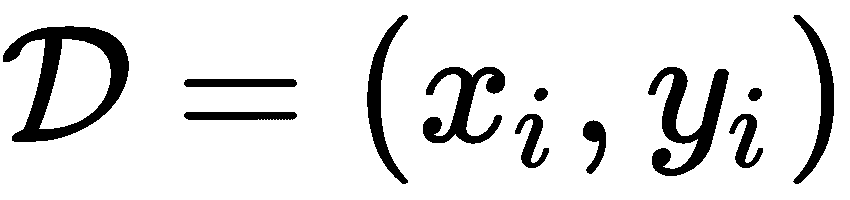 (由数据样本和各自的标签组成)。如我们所知，我们的模型 f 具有可训练参数θ，因此我们可以将模型表示为学习以下内容:
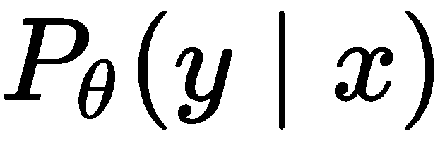
在这里， 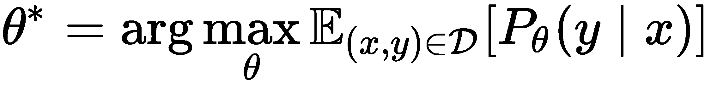 。
对于元学习，我们将我们的数据集分成两部分——一个支持集 S 和一个查询集B—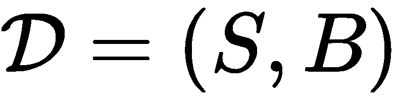。然后，我们取 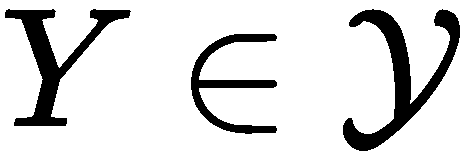 标签的子集，这样就得到 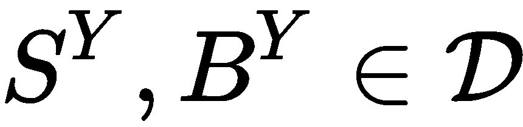 。然后，我们在支持集上训练我们的模型，同时在查询集上进行测试，这是以一种片断的方式进行的。通过从 的每一个类中采样来构建支持集，并且使用来自相同数据集的其他样本来类似地构建预测集。通过使用这种方法，我们的模型逐渐学会从较小的数据集学习。然后，我们计算模型的损失，并使用训练集使用反向传播进行优化，就像我们之前所做的那样。
目标现在看起来如下:
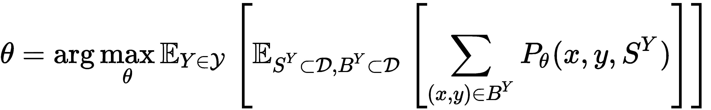
正如你所看到的，这有点类似于迁移学习，除了它更进一步，通过优化在几个任务而不是一个任务上表现良好。
实践中使用的元学习方法有三种，如下所示:
在基于模型的元学习中，我们希望创建一个模型，该模型能够仅使用少量的训练步骤来快速学习和更新其参数。我们可以在内部(在模型中)或外部(使用另一个模型)这样做。现在让我们探索一些方法。
顾名思义，记忆增强神经网络 ( 曼恩斯)使用外部存储器(一个存储缓冲区)进行增强，这使得模型更容易学习和保留新信息，以便以后不会忘记。使用的方法之一是训练一台神经图灵机 ( NTM )通过改变训练设置和记忆检索来学习学习算法。
为了使NTM适应元学习，我们需要它能够快速编码与新任务相关的信息，同时还确保可以快速访问存储的信息。其工作方式是，我们在当前时间步长传递信息，在下一个时间步长传递相应的标签，这迫使网络将信息保留更长时间。因此，在每个时间步，网络接收到以下内容:
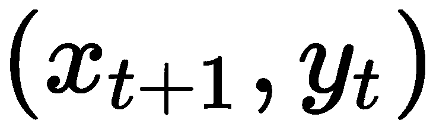
在下图中，我们可以观察到网络的样子:
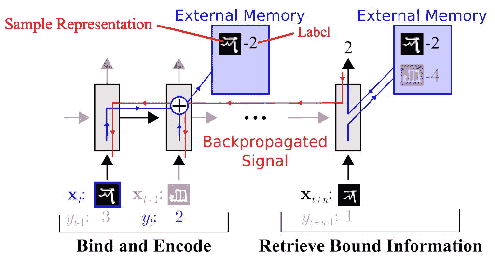
通过稍后提供标签，网络被迫记忆信息，以便当它被给予标签时，它可以回顾并回忆数据以做出预测。为了确保这个模型最适合元学习，读写机制也被改变了。
阅读作品使用内容相似度，如下:
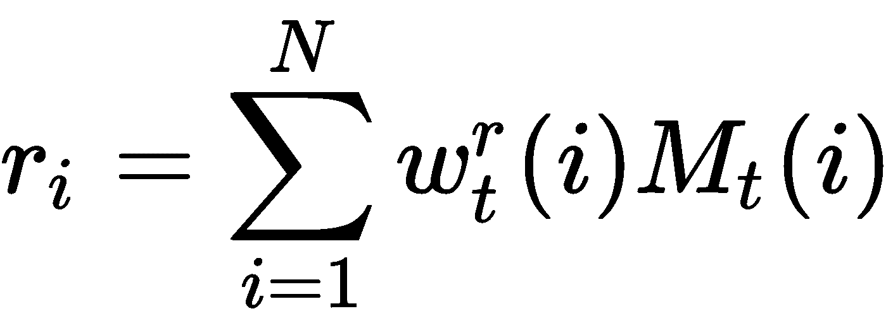
这里， 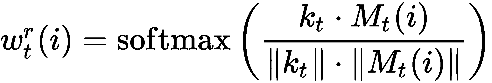 ， k t 是控制器在第t时间步输出的关键特征向量， 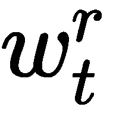 是通过内存中各行之间的余弦相似度计算的对 N 元素的读取权重， k t 和 r t 而MtT38】是内存矩阵(而 M t (i) 是其 i th 行)。
现在，为了写入内存，我们使用最近最少使用的访问 ( LRUA )，它将新信息写入存储最近最少使用的 ( LRU )内存或最频繁使用的(MRU)内存的位置。这样做的理由是，通过替换LRU内存，我们将能够维护更频繁使用的信息，而一旦MRU内存被检索，它可能在一段时间内不会被需要，所以我们可以重写它。
我们使用以下等式计算LRUA:
- 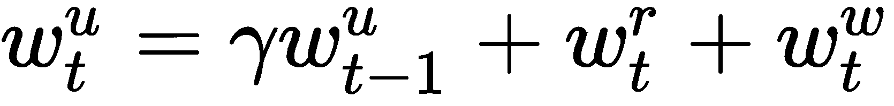
- 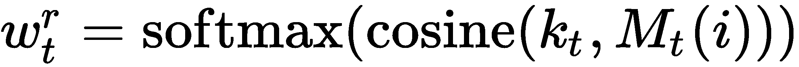
-

- 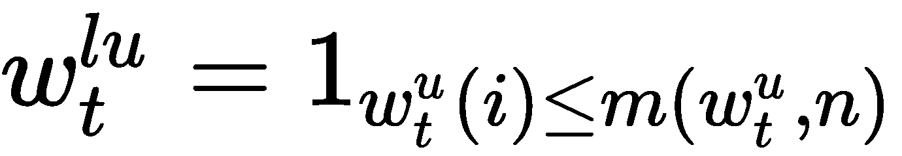 ，其中 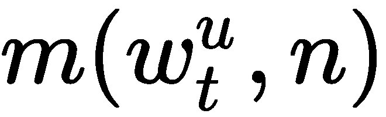 是 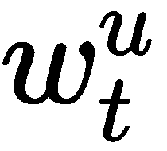 中第个最小的元素
在最后的更新等式中，当LRU存储器被设置为0时，存储器中的每一行都使用下面的等式来更新:
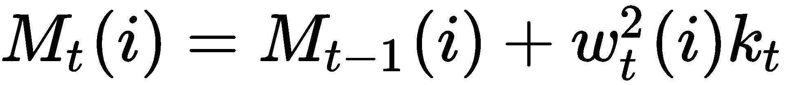
现在我们已经看到了元学习如何使用外部存储器通过覆盖一段时间没有使用的信息来学习新信息，我们将继续讨论另一种基于模型的元学习方法，该方法使用其内部架构来快速学习新信息。
元网络 ( 元网络)是一种被创建来快速概括跨任务的架构；它使用快速的重量来做到这一点。它们被称为快速权重的原因是，我们不是像通常那样使用梯度下降来更新权重，而是使用一个神经网络来预测另一个神经网络的权重。另一个神经网络生成的权重被称为快速权重，而依赖于梯度下降的权重被称为慢速权重。这样做的效果是，它支持元级别的持续学习。
在下图中，您可以看到MetaNet的整体架构:
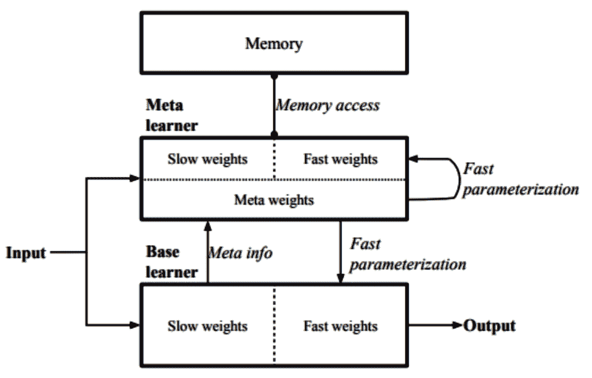
元网络由两个组件组成——元学习器，它学习嵌入函数fθT3】，以帮助确定两个数据输入之间的相似性并验证两个输入是否属于同一个类，以及基本学习器gφT7】，它执行实际的学习。正如您在前面的图表中所看到的，快速权重和慢速权重被加在一起，并输入到模型中。元学习者和基础学习者都有各自的快速权重。
这需要两个神经网络——Fw(一个LSTM，其输入为 f 的嵌入损失)和 G v (一个ANN)——每个神经网络输出 f θ 和 g φ 的快速权重。与 f θ 和 g θ 对应的快速权重分别为 θ * 和 φ * 。两者的区别在于，FwT45】的输入是 f 的嵌入损耗梯度，而GvT51】则是利用 g 的损耗梯度进行学习。
如你所见，这意味着我们必须学习四组不同的参数 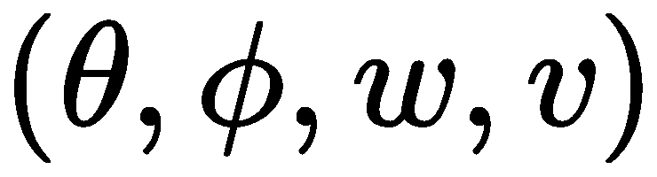 。为了训练我们的网络，我们使用了两个数据集——一个训练集 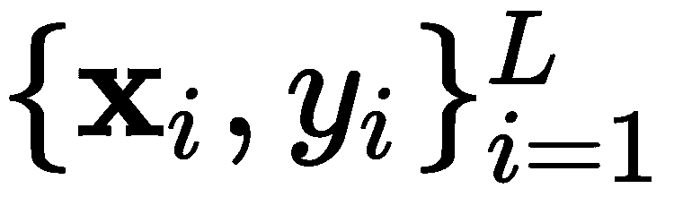 ，以及一个支持集 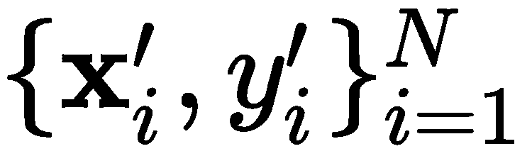 。
该网络的整体培训可分为三个不同的部分:
我们首先创建一个任务序列，每个任务都有一个训练集和一个支持集，然后从支持集中随机抽取 T 个输入对、  和 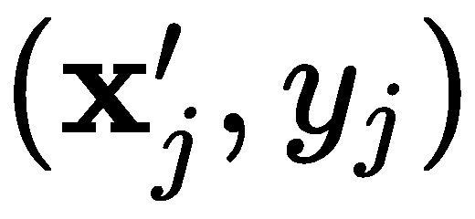 ，其中T<N——然后计算验证任务的嵌入的交叉熵损失。
和 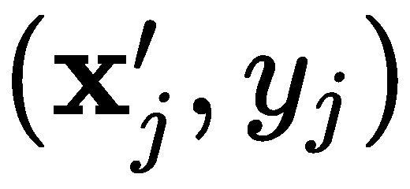 ，其中T<N——然后计算验证任务的嵌入的交叉熵损失。
然后，我们计算任务级别的快速权重， 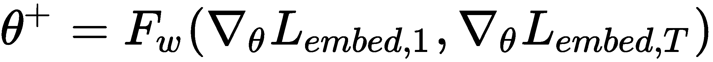 。一旦完成，我们从支持集计算示例级的快速权重 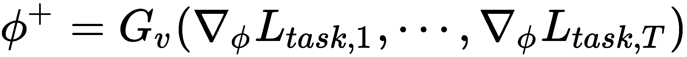 ，并更新值存储器的 i th 位置、 M 、 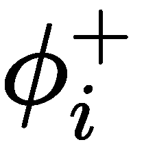 (对于元学习)。然后，我们使用 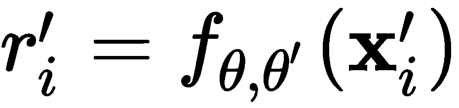 将来自支持集的采样点编码到任务空间中，并在关键存储器的Ith位置 R 处更新(对于基础学习者)。
一旦完成，我们从测试集中抽取样本，并使用 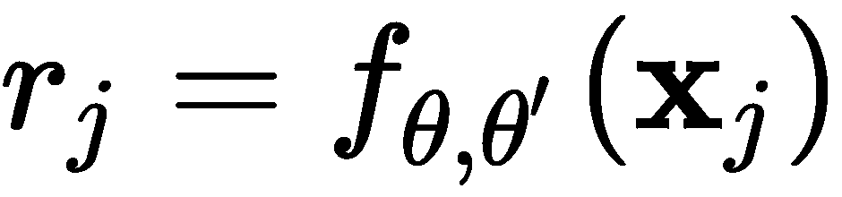 将它们编码到任务空间中，然后我们计算余弦相似度，以找出记忆索引和输入嵌入有多相似。
基于度量的元学习使用类似于聚类中使用的概念，我们试图学习对象之间的距离。这类似于核密度估计，其中我们使用核函数kθT32】来计算权重或两个样本的相似程度，然后找到标签的预测概率:
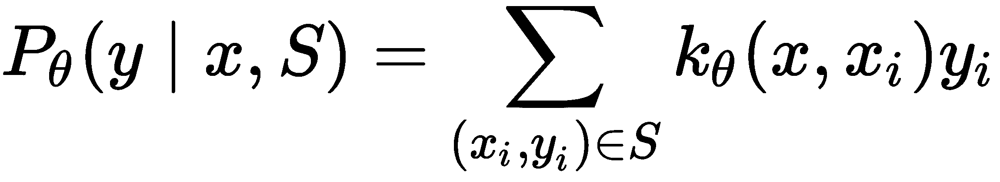
这类元学习算法明确地学习数据的嵌入以创建最佳核。
原型网络是一种用于少量学习的元学习算法。其工作方式是我们使用一个编码函数， f θ ，将每个 D 维输入编码成一个 M 维向量。该原型向量定义如下:
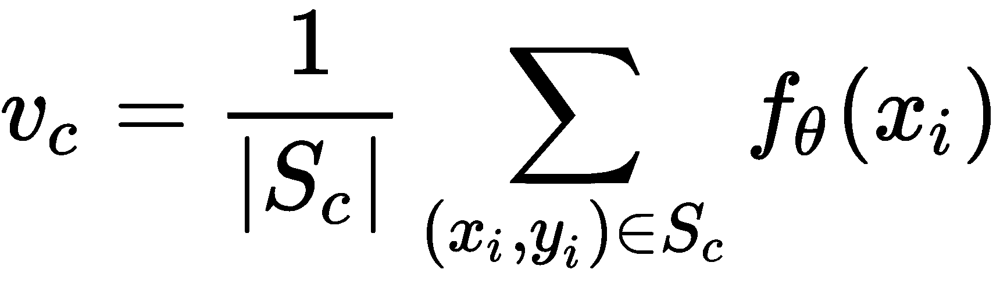
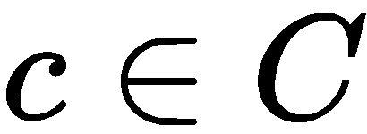每一个职业都是如此。然后，我们计算测试数据的嵌入和原型向量之间的距离 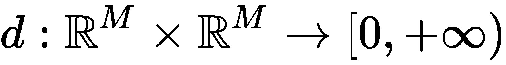 ，然后使用它来计算类的概率分布，如下所示:

这里，dφT3】是距离函数，但φ必须可微。
在下面的图表中，我们可以看到原型网络计算了少量发射原型和零发射原型:
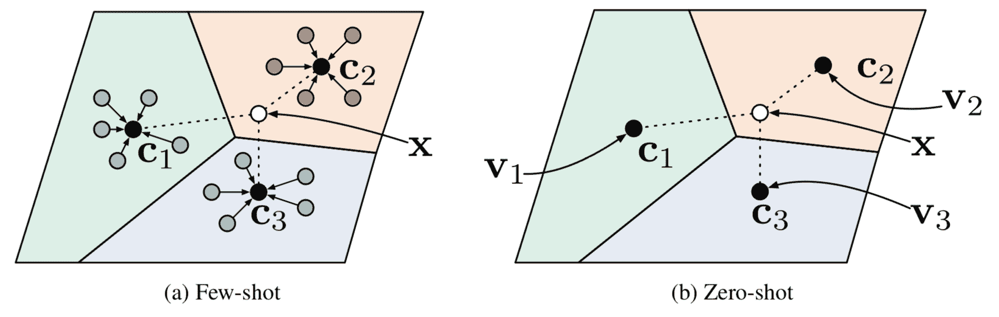
暹罗神经网络是由两个具有共享权重的相同神经网络组成的架构，并且它们的参数被训练成使用关于嵌入的距离度量来确定两个数据样本之间的相似性。这种架构已被证明对于一次性图像分类是有效的，其中网络学习辨别两幅图像是否属于同一类。
在下图中，我们可以看到网络接收两幅图像，每幅图像都经过相同的CNN ( f θ )来生成特征向量(嵌入):
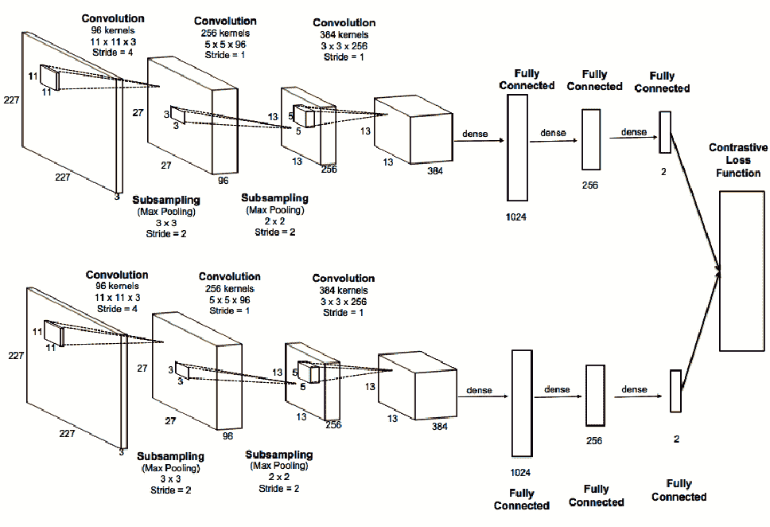
计算嵌入后，我们可以计算两个嵌入之间的距离，如下所示:
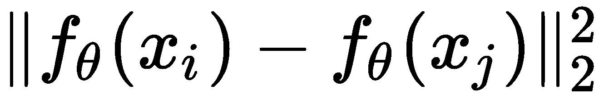
距离的输出通过带有sigmoid函数的多层感知器 ( MLP )计算两个输入是否属于同一类别的概率。
由于图像的标签是二进制的( 1 表示是，而 0 表示否)，我们使用交叉熵来计算损失:
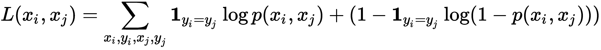
我们使用以下公式计算它属于哪一类的概率:
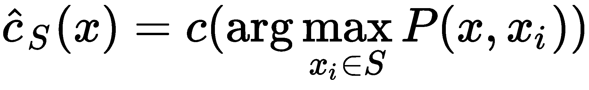
这里， S 是支撑集， x 是测试图像， c(x) 是图像对应的标签， 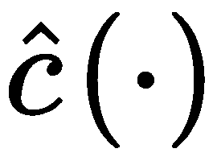 是类别预测。
在第7章、前馈神经网络中，我们介绍了反向传播和梯度下降作为优化模型参数以减少损失的方法；但我们也看到它非常慢，需要大量的训练样本和大量的计算能力。为了克服这一点，我们使用基于优化的元学习，我们学习优化过程。但是我们怎么做呢？
让我们暂时回想一下我们学习基于梯度的优化的时候。那里发生了什么？我们从参数空间中的初始点开始，然后计算梯度，并向局部/全局最小值前进一步，然后重复这些步骤。在梯度下降中，利用动量，我们使用先前更新的历史来指导下一次更新。仔细想想，这与RNNs和长时短时记忆 ( LSTM )略有相似，所以我们只要用一个RNN来代替梯度下降的整个过程就可以了。这种方法被称为通过梯度下降学习。这个名字背后的原因是我们使用梯度下降来训练RNN，然后我们使用RNN来执行梯度下降。在这个场景中，我们将RNN称为优化器，将基本模型称为优化器。
正如我们所知，普通的rnn有他们的问题(消失梯度)，所以在这里，我们将涵盖使用LSTM细胞优化模型。但首先，让我们重温一下参数优化是如何工作的。它看起来如下:
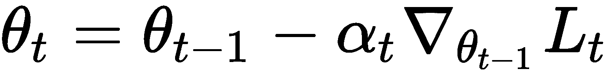
让我们将此与LSTM牢房中的更新进行比较:
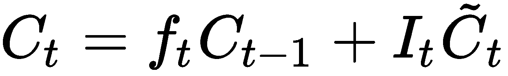
这里的和 。然而，遗忘门和输入门不必是固定的；它们是可以学习的，这样我们就可以把它们用于其他任务。遗忘门、输入门、候选层和存储器状态的计算现在分别变成如下:
在下图中，我们可以看到LSTM元学习者是如何构成的:
在训练过程中，我们希望尝试并模拟测试过程中会发生的情况，在训练过程中，我们对数据集进行如下采样:
在此之后，我们从 采样，以通过总数为 T 的迭代来更新模型的参数，并计算相对于基础模型的权重的损失(θ)，以及将损失、梯度和元学习器参数(φ)馈送给优化器(元学习器)。然后元学习器将输出新的单元状态，我们用它来更新基本模型的参数。
一旦我们完成了 T 次迭代，我们就可以期望找到基础模型的最佳参数。为了测试 θ T 的优度并更新元学习器的参数，我们找到测试数据相对于 θ T 的损失，然后找到测试损失相对于φ的梯度，对φ进行更新 N 次迭代。
模型不可知元学习 ( MAML )是一种优化算法，可以在任何类型的使用梯度下降训练的神经网络上工作。假设我们有一个模型， f ，带参数θ，还有一个任务，τIT27】，它有一个对应的数据集 。然后，我们可以使用一个或几个梯度下降步骤对模型进行更新。该算法中的一个步骤如下:
前面的步骤学习了优化单个任务，但是我们想要优化多个任务。因此，我们可以更改任务以找到多个任务的最佳参数，如下所示:
这里， L (0) 是初始训练批次对应的损失， L (1) 是下一个训练批次的损失。
这看起来非常类似于我们知道的梯度下降，那么它有什么特别之处呢？这样做的目的是学习与其他任务相关的参数，并尝试学习用于下一个任务的最佳初始参数，以减少训练时间。但是，这使用二阶优化，计算量更大一些，因此，我们可以使用一阶方法，这种方法更可行。这种方法被称为一阶模型不可知元学习 ( FOMAML )。下面的计算我们来看看两者的区别。
让我们考虑一种情况，我们执行 n 个梯度下降步骤，其中 n ≥ 1 。我们的起点是 θ 元 ，步骤如下:
一旦计算出 n 步，我们就对下一批进行采样并对其进行更新。这就变成了以下内容:
T12】
这里， 。
但是，FOMAML中的梯度如下:
祝贺你——你已经完成了关于迁移学习和元学习的这一章！
在这一章中，我们涵盖了深度学习领域中两个非常有趣的领域——迁移学习和元学习——这两个领域都有望通过使神经网络能够学习额外的任务并对看不见的分布进行归纳，不仅推进深度学习领域，还推进人工智能领域。我们探讨了几种元学习方法，包括基于模型的、基于度量的和基于优化的，并探讨了它们之间的区别。
下一章，我们将学习几何深度学习。